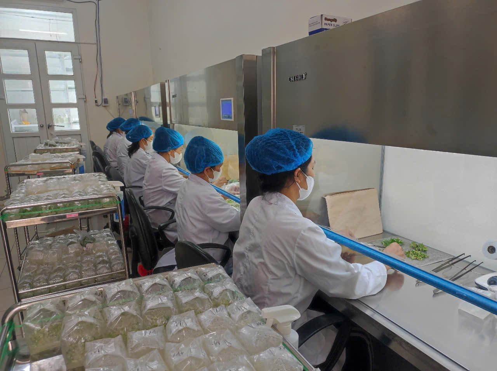
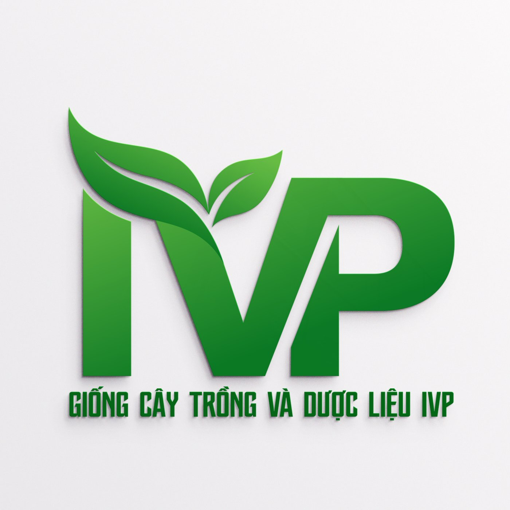

Công ty CP Giống Cây Trồng
và Dược Liệu IVP
Hotline/WhatsApp/Zalo: +84397600496
Trang chủ
Sản phẩm
🌱 Giống cây trồng
⚙️ Quy trình công nghệ
📦 Vật tư nông nghiệp
🍍 Trái cây
Tin tức
Nông Trang
Thông tin KHCN
Liên hệ
Thông tin Khoa học Công nghệ
Trung tâm Nuôi cấy mô IVP – Dấu ấn mới với giống Dứa Kim Cương được công bố lưu hành
19/05/2026
Đọc tiếp →
IVP được chứng nhận Doanh nghiệp Khoa học và Công nghệ
09/10/2025
Đọc tiếp →
Xem video
Quay lại danh sách
×
↑